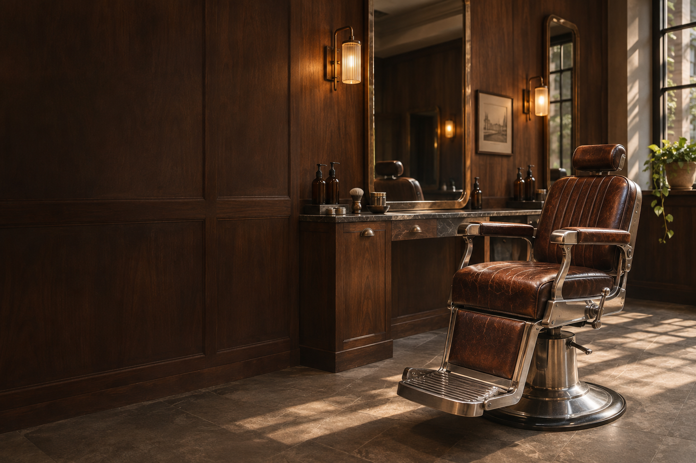

Dobre cięcie.
Własny charakter.
Włosy. Broda. Chwila dla siebie.
Klasyczne rzemiosło w Twoim rytmie.
Nie tylko cięcie.
Twój mały rytuał.
Usiądź wygodnie.
Reszta może chwilę poczekać.
Tu liczy się uważność. Rozmowa o tym, jak nosisz włosy, co lubisz i ile masz rano czasu. Potem precyzyjne cięcie, dopracowany kontur i wykończenie, które potrafisz odtworzyć sam.
Bez pośpiechu. Bez fryzury z przypadku. Z miejscem na Twój charakter.
Poznaj nasze podejście ↗Forma to kwestia
dobrych proporcji.
Cztery usługi. Jedno podejście.
Zawsze zaczynamy od rozmowy.
Przykładowa oferta fikcyjnego salonu. Kliknij usługę, aby zobaczyć demonstracyjny planer wizyty.
Dobra ręka.
Uważne oko.
„Dobry fade to technika.
Dobry barber to też słuchanie.”
Maks. Twarz naszej koncepcji i podejścia do barberingu: spokojna rozmowa, świadome proporcje i precyzja do ostatniego detalu. Klasyczne cięcia, płynne przejścia i brody, które pasują do człowieka.
Charakter
tkwi w detalach.
Fotografie ilustracyjne. Koncepcja wizualna, nie dokumentacja rzeczywistego salonu.
Zanim
usiądziesz.
Nie wiem, jakie cięcie wybrać.+
To dobry punkt wyjścia. W koncepcji wizyty zaczynamy od kształtu twarzy, rodzaju włosów i tego, jak chcesz je układać. Inspiracja ze zdjęcia pomaga, ale nie jest obowiązkowa.
Czy trzeba umyć włosy przed wizytą?+
Najlepiej przyjść bez dużej ilości pasty czy lakieru. Dzięki temu łatwiej ocenić naturalny kierunek i strukturę włosów. Szczegóły ustala się z salonem przy rezerwacji.
Jak często odświeżać fade?+
Zwykle co 2–3 tygodnie, jeśli zależy Ci na wyraźnym, świeżym przejściu. Klasyczne, dłuższe cięcia mogą wymagać odświeżenia rzadziej — zależy to od tempa wzrostu i Twojego stylu.
Czy mogę tutaj zarezerwować termin?+
To strona demonstracyjna fikcyjnego barbershopu. Planer pozwala wybrać usługę i przygotować podsumowanie, ale nie wysyła rezerwacji i nie potwierdza dostępności.
Dobry styl.
Zaczyna się tutaj.
Wtorek–piątek 10:00–20:00
Sobota 9:00–16:00
Lokalizacja i godziny przykładowe.